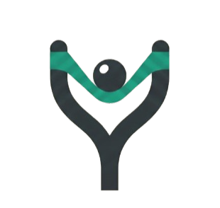
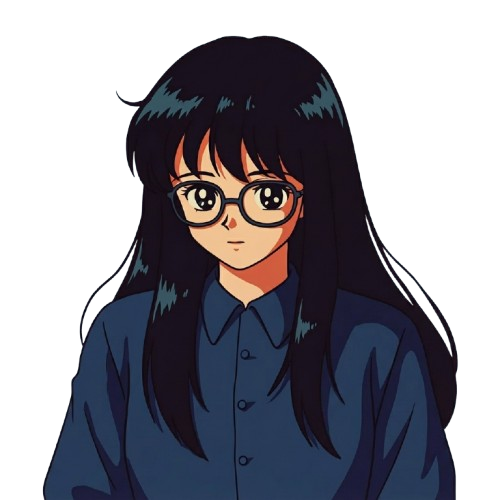
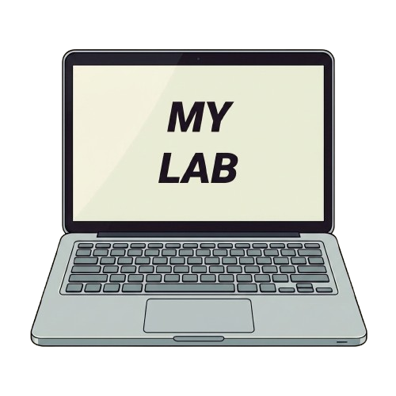
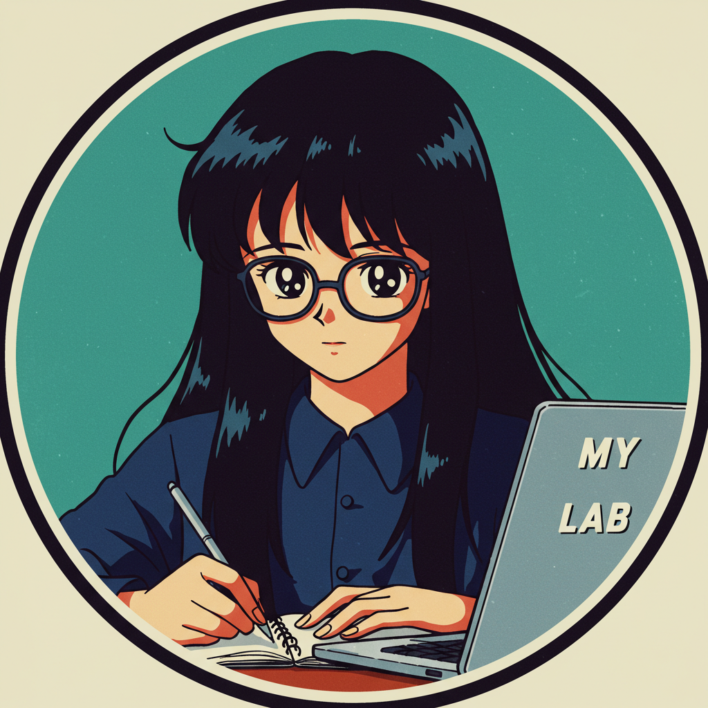
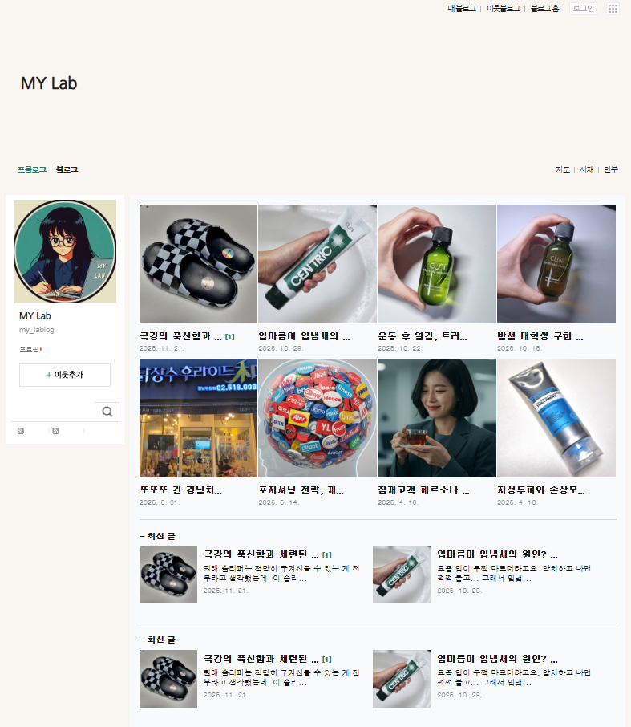
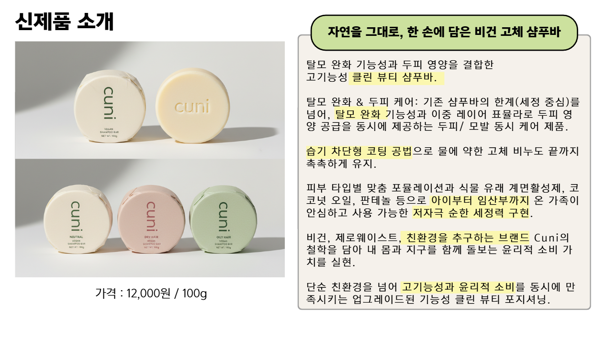

"충분히 당겨 생각하고,


LOGO STORY: 전략적 긴장감이 만드는 명확한 결과
저의 로고는 마케터로서의 두 가지 핵심 정체성인 'M(Mind/Insight)'과 'Y(Yield/Strategy)'의 결합을 형상화합니다.
Y : 로고의 중심축인 'Y'는 흔들리지 않는 논리적 전략과 데이터 기반의 단단한 중심을 의미합니다.
M : 상단의 'M'은 다각도에서 시장을 바라보는 유연한 통찰력을 상징하며, 새총의 고무줄처럼 팽팽한 사고의 긴장감을 유지합니다.
The Point : 중앙의 원형 포인트는 충분히 당겨진 생각이 전략을 통해 성과로 발사되는 지점을 상징합니다.

STRATEGIC MIND: 유연한 연결자
디지털 마케팅 전공자로서 퍼포먼스 마케팅과 콘텐츠 전략을 공부하며 데이터 뒤의 본질을 읽는 법을 익혔습니다. 여기에 UI/UX 디자인 역량을 더해, 기획한 전략을 직접 눈에 보이는 화면으로 구현해냅니다. 이성과 감성, 기획과 제작 사이를 유연하게 연결하며 브랜드의 메시지가 사용자에게 가장 다정하게 닿을 수 있는 방법을 설계합니다.


DIRECT ACTION: 다정한 시선, 차가운 실행

'다정한' 관찰로 타겟의 마음을 읽고, '생동감 있는' 에너지를 담아 콘텐츠를 만듭니다. 르무통 UX 디자인 프로젝트부터 CUNI 샴푸바 마케팅 기획까지, 저는 늘 현장에서 직접 부딪히며 성과를 조준해왔습니다. 생각에만 머물지 않고 결과로 증명하는 실행형 마케터로서, 브랜드 가치를 가장 정확한 지점까지 쏘아 올리겠습니다.